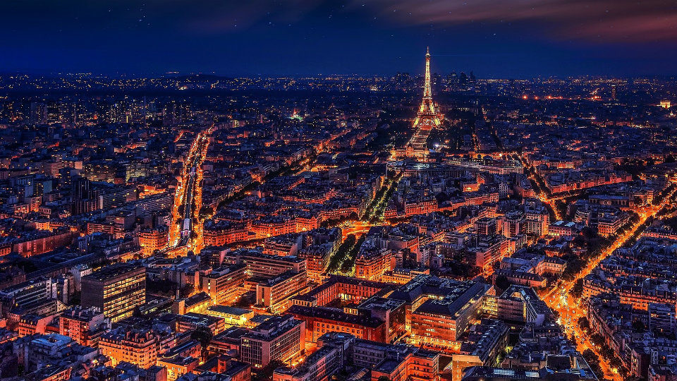
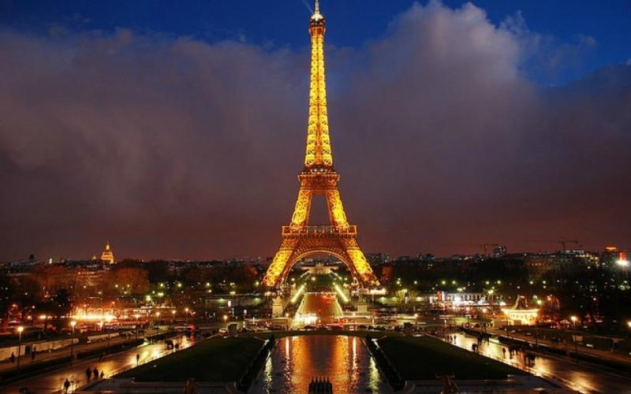
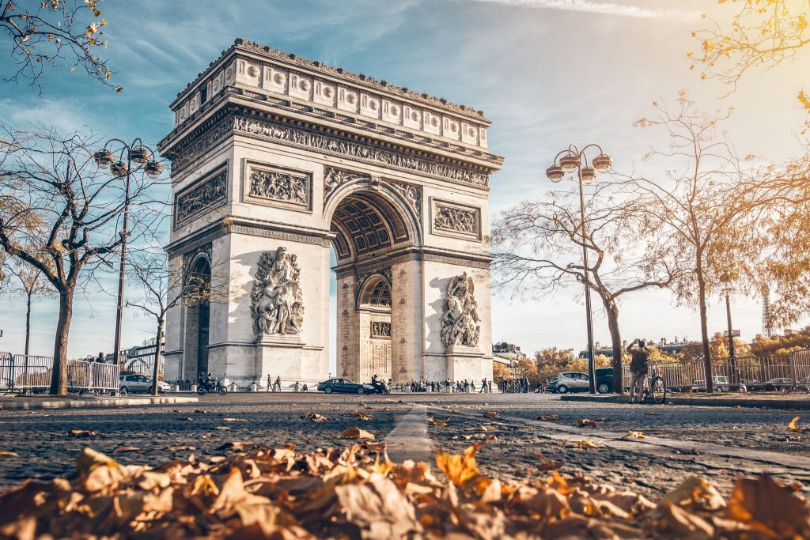

Η Γαλλία αποτελεί έναν από τους δημοφηλέστερους ταδιωτικούς προόρισμούς στην Ευρώπη. Έχει πρωτεύουσα και μεγαλύτερη πόλη, το Παρίσι μια απ τις ομορφότερες πόλεις του κόσμου που αξίζει κανείς να επισκεφτεί. Επίσημη γλώσσα της Γαλλίας, είναι η γαλλική και νόμισμά της είναι το ευρώ. Το σύνθημά της είναι «Ελευθερία, Ισότητα, Αδερφοσύνη», και η σημαία της αποτελείται από τρεις κάθετες λωρίδες χρώματος μπλε, άσπρου και κόκκινου.
Ισως ένα από τα δημοφιλέστερα αξιοθέατα του κόσμου, ο Πύργος του Άιφελ, κατασκευάστηκε μεταξύ 1887 και 1889, με αφορμή την εκατονταετή επέτειο της Γαλλικής Επανάστασης. Το νέο γυάλινο πάτωμα του πρώτου ορόφου προσφέρει φανταστική διάφανη θέα 57 μέτρα από τη γη, και συνοδεύετεαι από χώρους αναψυχής, εστιατόρια, και περισσότερα σουβενίρ από όσα θα χρειαστείτε. Με διαδραστικές παρουσιάσεις, και ξεναγήσεις για παιδιά, σίγουρα υπολογίστε τουλάχιστον 90 λεπτά για μία ικανοποιητική γεύση από όσα προσφέρει ο πρώτος όροφος του πύργου, ενώ αν σκοπεύετε να κάτσετε για φαγητό, σίγουρα το εστιατόριο 58 Tour Eiffel αποτελεί πολύ καλή επιλογή. Εντοπίστε το κατάλληλο μίνι-τηλεσκόπειο γύρω σας, και εξερευνήστε κάθε γωνιά και αξιοθέατο του Παρισίου, μέσα από διαφορετικά μάτια. Δεν υπάρχουν λόγοι υψοφοβίας, καθώς τα σίδερα καλύπτουν έξυπνα κάθε διάσταση γύρω μας, ενώ αφήνουν άπλετο χώρο για την αμνημόνευτη θέα.
Η επιβλητική αψίδα του Θριάμβου (γαλλ. L’ Arc de Triomphe) βρίσκεται επί της πλατείας Σαρλ ντε Γκολ (Place Charles-de-Gaulle), στο τέρμα της λεωφόρου των Ιλισίων Πεδίων και είναι η πιο ψηλή αψίδα του κόσμου. Συγκεκριμένα έχει ύψος 55 μέτρα, πλάτος 45 μέτρα και βάθος 22 μέτρα. Οι τέσσερις κίονες στους οποίους στηρίζεται η αψίδα διακοσμούνται από μεγάλα ανάγλυφα, τα οποία απεικονίζουν: την Έξοδο των Εθελοντών του 1792 (La Marseillaise), τον Θρίαμβο του Ναπολέοντα το 1810, την Γαλλική Αντίσταση στην Μάχη του Παρισιού το 1814 και την Ειρήνη του 1815. Στην επιφάνειά της είναι χαραγμένα τα ονόματα των νικών των γαλλικών στρατευμάτων αλλά και των 558 στρατηγών που διοίκησαν τα γαλλικά στρατεύματα κατά τη διάρκεια της βασιλείας του Ναπολέοντα Βοναπάρτη. Αποτελεί μνημείο-σύμβολο εξουσίας και δύναμης και συνάμα σήμα κατατεθέν της πόλης του Παρισιού. Μέσα στην αψίδα φιλοξενείται μουσείο με φωτογραφίες, μακέτες, σχέδια και ντοκουμέντα από την κατασκευή της το 1806. Η πρόσβαση για την επίσκεψη της αψίδας είναι δυνατή μόνον υπογείως (απαγορεύεται η διάσχιση της πλατείας από πεζούς). Υπάρχει, επίσης, η δυνατότητα για άνοδο στην οροφή της (284 σκαλοπάτια), απ’ όπου ο επισκέπτης έχει μοναδική πανοραμική θέα στο Παρίσι.
| ΚΟΥΖΙΝΕΣ | Γαλλική |
|---|---|
| ΓΕΥΜΑΤΑ | Επιδόρπιο |
| ΔΥΝΑΤΟΤΗΤΕΣ | Φαγητό σε πακέτο, Δέχεται πιστωτικές κάρτες, Οικογενειακό στιλ |
| ΚΟΥΖΙΝΕΣ | Γαλλική, Ευρωπαϊκή, Υγιεινή |
|---|---|
| ΕΙΔΙΚΕΣ ΔΙΑΤΡΟΦΕΣ | Επιλογές βίγκαν | ΓΕΥΜΑΤΑ | Μεσημεριανό, Δείπνο, Ποτά |
| ΔΥΝΑΤΟΤΗΤΕΣ | Κρατήσεις, Υπαίθρια τραπέζια, Καθίσματα, Πρόσβαση σε αναπηρική καρέκλα, Σερβίρει αλκοόλ, Δωρεάν WiFi, Δέχεται πιστωτικές κάρτες, Με σερβιτόρους, Πλήρες μπαρ, Κρασί και μπύρα, Ψηφιακές πληρωμές, Φιλικό προς τους σκύλους, Οικογενειακό στιλ |
Το ξενοδοχείο Argia βρίσκεται στο Hasparren, στους πρόποδες των βουνών Ursuya και Baigura. Προσφέρει εξωτερική ηλιόλουστη βεράντα και κομψά δωμάτια με μοντέρνο μπάνιο και δωρεάν Wi-Fi. Τα δωμάτια στο Argia είναι εξοπλισμένα με τηλεόραση και ιδιωτικό μπάνιο. Το εστιατόριο του ξενοδοχείου σερβίρει νόστιμη κουζίνα από τη Χώρα των Βάσκων και οι επισκέπτες μπορούν να χαλαρώσουν με ένα βραδινό ποτό στο μπαρ. Το Biarritz απέχει 30 λεπτά με το αυτοκίνητο από την Αργία και τα ισπανικά σύνορα 23 χιλιόμετρα. Για τους επισκέπτες που έρχονται με αυτοκίνητο, διατίθεται δωρεάν ιδιωτικός χώρος στάθμευσης.

Το Casa e Natura βρίσκεται στο Moriani Plage στην περιοχή της Κορσικής και στο Plage de Vanga di l'Oru και είναι προσβάσιμο σε 400 μέτρα και προσφέρει καταλύματα με δωρεάν Wi-Fi, εγκαταστάσεις μπάρμπεκιου, κήπο και δωρεάν ιδιωτικό χώρο στάθμευσης. Όλες οι μονάδες διαθέτουν καναπέ, καθιστικό, τηλεόραση επίπεδης οθόνης, καλά εξοπλισμένη κουζίνα με τραπεζαρία και ιδιωτικό μπάνιο με στεγνωτήρα μαλλιών. Θα βρείτε επίσης πλυντήριο πιάτων, φούρνο μικροκυμάτων, ψυγείο και καφετιέρα. Στις εγκαταστάσεις υπάρχει βεράντα, ενώ σε κοντινή απόσταση από το πάρκο διακοπών μπορείτε να κάνετε πεζοπορία. Plage de Poggiole είναι 1,8 χιλιόμετρα από το Casa e Natura, ενώ Moriani Plage είναι 1,9 χιλιόμετρα από το ξενοδοχείο. Το πλησιέστερο αεροδρόμιο είναι το αεροδρόμιο Bastia - Poretta, 28 χλμ από το κατάλυμα.